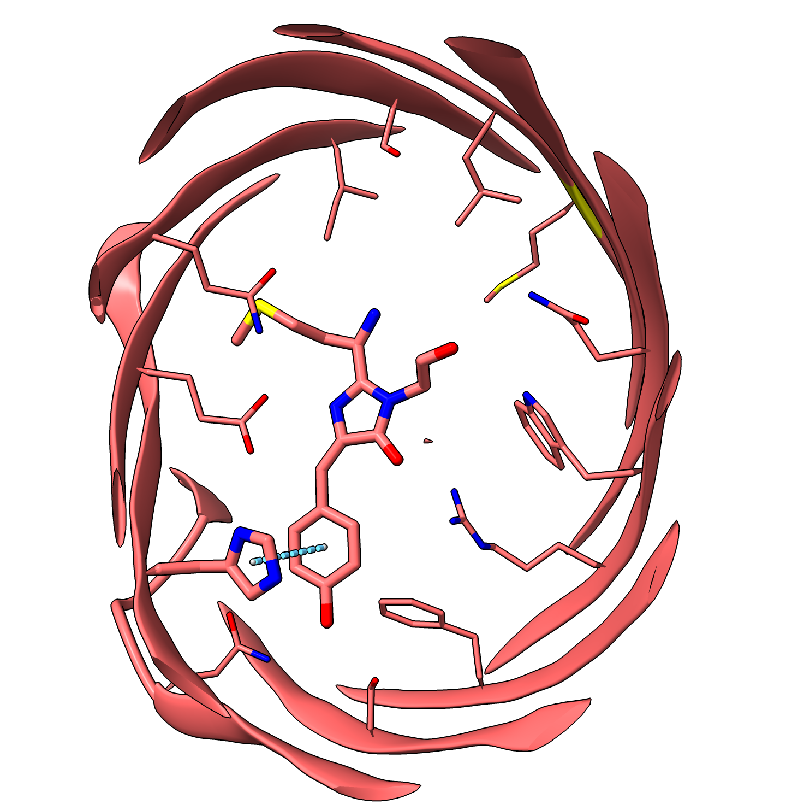
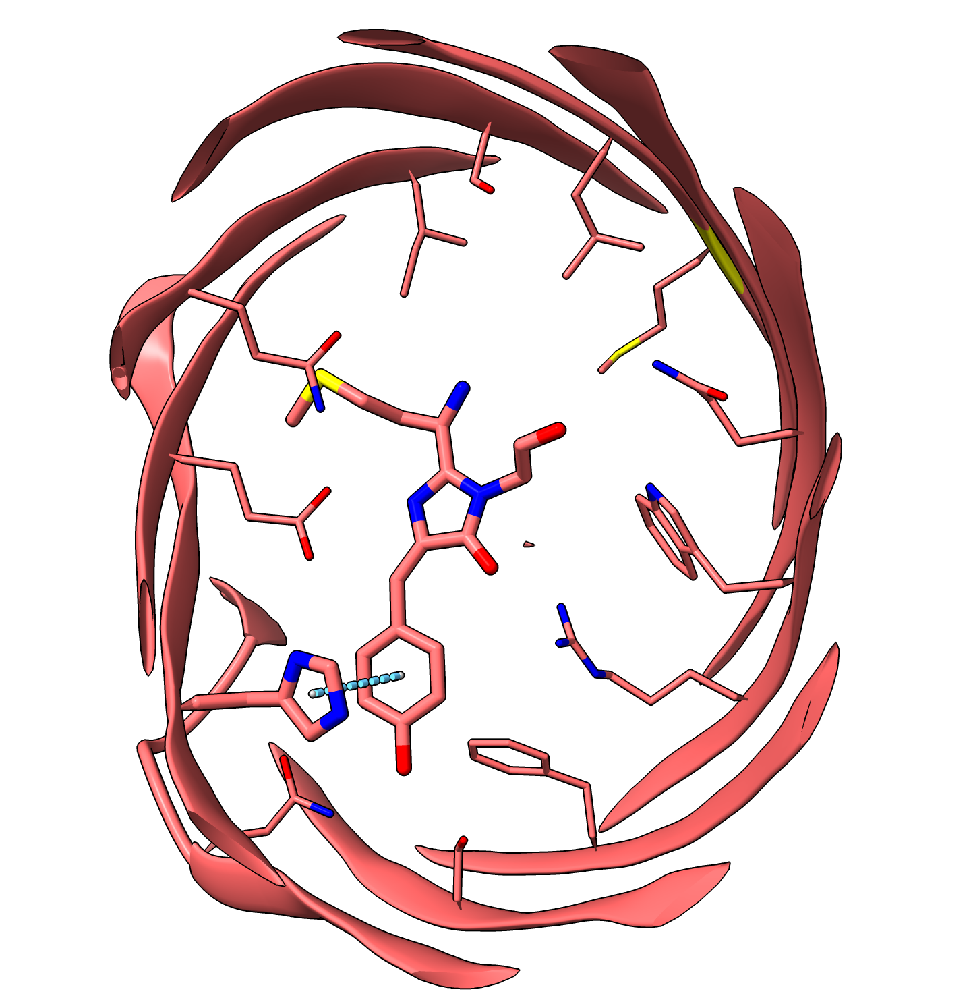
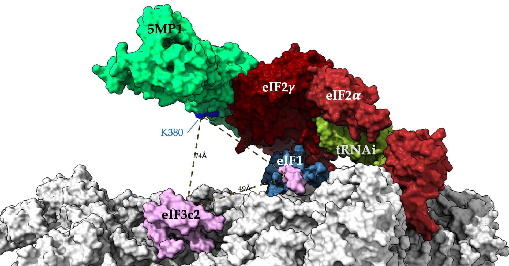

Projects
Proctolin and proctolin receptor study
- Based on the proctolin receptor protein sequence, the homology model was built by GPCR-I-TASSER.
- The homology model was used to do docking study by Glide SP.
- The preliminary results from Glide SP were used to do inducted fit docking.
- The results from induced fit docking matching the experimental results were used to do QM-polarized ligand docking.
- The top results were used to run MD simulations to further reveal the binding sites on the proctolin receptor. Then the binding sites were tested in lab.
Methods
- Homology modeling: GPCR-I-TASSER
- Docking: Glide SP ligand docking, Induced fit docking, QM-polarized ligand docking
- MD simulations: Amber, CHARMM GUI
- Results analysis: CPPTRAJ
- Results visualization: ChimeraX
- Electrostatics surface analysis: ChimeraX
- Molecular formula drawing: ChemDraw
Red fluorescent protein chromophore conformational study
- Methods
- pKa calculation: Jaguar
- MD simulations: Desmond
- Metadynamics simulations: Desmond
- PDB ID: 3M22
Formate dehydrogenase covalent docking study
- Methods
- Homology modeling: Schrodinger
- Covalent Docking: Glide
- Results visualization: ChimeraX
5MP wiht the preinitiation complex (PIC) docking study
- Methods
- Electrostatics surface analysis: Chimera
- Protein-protein docking:
- Results visualization: ChimeraX
ATP4 homology modleing study
Neuropeptides functon as neurohormones, neurotransmitters or neuromodulators.
Proctolin is one kind of neuropeptide which is a small protein-like molecule.
It is a pentapeptide (RYLPT) involved in the stimulation of skeltal and visceral muscles contraction.
Most neuropeptide receptors are seven transmembrane-domain, G protein-coupled receptors.
The proctolin receptor is also a G protein-coupled receptor (GPCR).
Due to the dynamic properties of GPCRs there are limited crystal structures available and there is no crystal structure of the proctolin receptor.
Here I used computational methods to reveal the mechanism of binding between proctolin and proctolin receptor.
My focus was on using computational methods to study proctolin and proctolin receptor,
and using the results to design proctolin receptor mutants to investigate the binding mechanism.
Then, it can help for optimizating the potenial durgs.


Fluorescent proteins play a very important role in visualization of cell imaging. It has been using to reveal the mechanisms of cell cycles. This study is focusing on the study of dynamics of choromphores of red fluorescent proteins and the interactions betweenthe chromophore and protein.
 


This is a small contribution to Open Source Malaria (OSM). Previous OSM used the traditional homology modeling method to build the homology model. After the AlphaFold2 came out, we were trying to use the model of AlphaFold2 generated to keep studying ligands docking to ATP4.
© 2021 Ye Zou